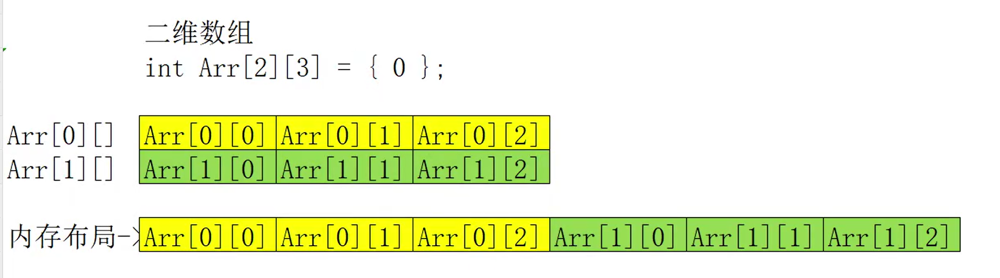
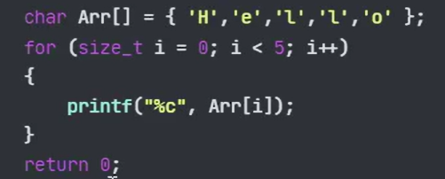

变量
标识符（变量名）命名规则：
1.不能是关键字
2.只能由字母数字下划线组成
3.字母区分大小写
4.第一个字符只能是字母或下划线
int a; \\定义变量，占用内存空间
a =2
========================================
extern int b; \\ 声明变量，不占用内存
b = 2 ; //会发生报错。
// extern也叫类型限定符。
类型限定符
- extern
- const
- register
- volatile
常量
- 宏常量
// #defind 常量名 初始值
#define HP 100
- const修饰的变量
// const 数据类型 变量名称=初始值；
const int MP = 100;
转义字符
// 1. \n 换行输出
// 2. \\ 输出"\"
// 3. \" 输出 "
// 以此类推
格式化输出
%d 输出有符号的十进制数
%s 输出字符串
输入
scanf函数 和 scanf_s函数
#include <stdio.h>
int main() {
int num = 0; //声明变量
printf("请输入数字");//提示
scanf_s("%d", &num);//输入，注意要在num前加上 &
printf("数字是:%d", num);// 输出结果
return 0;
}
数据类型
- 整数
//短整型，占用2字节
short a = 1;
printf("%hd",a);
//整形，占用4字节
int b = 2;
printf("%d",b);
//长整型，占用4字节
long c = 3;
printf("%ld",c);
//长长整形，占用8字节
long long d = 4;
printf("%lld",d);
//使用sizeof函数，可以输出数据的长度，单位字节
printf("%d",sizeof(d));
//有符号与无符号
//声明整数，不加前缀，默认是 有符号类型
// int num = 1 相当于 signed int num = 1
unsigned int e = 10;
printf("%u", e); // 输出无符号数 使用%u
//区别
unsigned int e = 10; // -2^31 ~ 2^31-1
int e = 10; // 0 ~ 2^32-1
- 浮点型
//单精度，占用4字节，表示7个有效位
float a = 3.14159f; //要在末尾加上f，才会变成单精度。
printf("%f", a);
printf("%.3f", a); // .3 表示输出小数点后三位
//双精度，占用8字节，表示15-16有效位
double b = 3.14159;
printf("%lf", b); //使用%lf
printf("%.3lf", b);
- 字符型
//char，占用1字节，存储单个字符。
char a = 'A';//注意要使用单引号。
printf("%c\n", a);
//字符对应的是ASCII码表。
a = 0x47; //字母G 的ACSCII 的十六进制是47
printf("%c", a);
- 布尔型
//真 == true == 1
//假 == false == 0
//实际应用
printf("%d", 1+1 == 2);
//输出1 ，此值为布尔值。
类型转换
double a = 1.2132;
printf("%d",(int)a);// 在变量前加上(int)
printf("%d",(float)a); //(float)
运算符
//一元运算符
表示正负数，-1,3
//二元运算符
表示运算，1+1 2-1
//取模 13%4 = 1 求余数
// ！ 非
// && 与
// || 或
前置递增和后置递增
//都表示a+1
int a = 1；
++a;
a++;
---------------------
int a = 0;
int b = 0;
a = 5;
b = ++a + 1;
//a = a + 1
//b + a + 1
printf("%d %d \n", a, b); // a=6 b=7
a = 5;
b = a++ + 1;
//b = a + 1
//a = a + 1
printf("%d %d \n", a, b); // a=6 b=6
结论：++a出现在计算式中，会先计算a=a+1; 而a++，会最后计算。
前置递减和后置递减
同理
选择语句
if .. else / if else if / if else 太简单，不写了。
三目运算符
//表达式1 ？ 表达式2 : 表达式3
//若1条件成立 ,执行2，返回结果。
//不成立 ， 执行3 ，返回结果。
int a = 10;
int b = 20;
int c = 0;
c = a < b ? a : b;
printf("%d", c);
switch语句（运行效率比if 判断高）
int a = 1;
switch (a) //条件只能是整数或字符型。
{
case 1:
printf("666");
break; //表示中断，否则会继续向下执行。
case 2:
printf("aa");
break;
default: //都不匹配执行这个。
printf("11");
break;
}
循环语句
while，do..whlie，for
for (int i = 0; i <= 100; i++) {
printf("11");
}
//for循环判断过程
// 1. int i=0
// 2.判断i<=100
// 3.成立执行内容
// 4.i++
// 5.判断i<=100
//九九乘法表
for (int i = 1; i<=9;i++)
{
for (int j = 1; j <= i; j++)
{
int re = i * j;
printf("%d * %d = %d ",j,i,re);
}
printf("\n");
}
跳转语句
-
break语句：跳出一层循环。
- continue 跳出单次循环。
-
goto跳转
goto FLAG; //起点
printf("aa");
printf("aa");
printf("aa");
FLAG: //终点
printf("aa");
数组 : 存储相同数据的容器。
数组是一个指向数组首元素的指针，可以将数组视为指针常量。
一元数组
//第一种写法：定义了10个，后六个默认被0填充
int test[10] = { 1,2,3,4 };
for (int i = 0; i <= 9; i++) {
printf("%d\n", test[i]);
}
//第二种写法：全部赋值0
int test2[10] = { 0 };
//第三种写法：可变长度数组
int test3[] = {1,2,3};
输出
printf("%p\n",&test3); //直接输出数组名，得到的结果是数组第一个元素的地址。
printf("%p", &test3[0]);//输出结果与上面一致。
数组的总大小=单个元素大小 * 元素个数。
二元数组

//第一种写法
int Arr1[2][3];
Arr1[0][0] = 1;
Arr1[0][1] = 2;
Arr1[0][2] = 3;
Arr1[1][0] = 4;
Arr1[1][1] = 5;
Arr1[1][2] = 6;
for (int i = 0; i < 2; i++) {
for (int j = 0; j < 3; j++) {
printf("%d\n",Arr1[i][j]);
}
}
//第二种
int Arr2[2][3] = {
{11,22,33},
{44,55,66}
};
//第三种
int Arr3[2][3] = { 11,22,33,44,55,66};
//第四种 省略行，程序自动根据列数，判断行数。
int Arr[][3] = {11,22,33,44,55,66};
int Arr2[2][3] = {
{11,22,33},
{44,55,66}
};
printf("%p\n",&Arr2); //003CFCBC
printf("%p\n",&Arr2[0]); //003CFCBC
printf("%p\n", &Arr2[0][0]); //003CFCBC 这是查看数组的第一行第一列元素的地址
//以上形式取得数组首元素的地址是相同的。
printf("%p\n", &Arr2[1]); //003CFCC8
// 这是查看数组的第二行第一列元素的地址。 由于int定义长度为4字节，由此判断 每行元素为3*4=12字节。
//行数计算---数组总长/单行长度。
printf("%d\n", sizeof(Arr2) / sizeof(Arr2[0]));
//列数计算--数组单行长度/单个元素长度
printf("%d\n", sizeof(Arr2[0]) / sizeof(Arr2[0][0]));
拓展
变量：指代的是内存地址。每个变量的内存地址是随机的。变量未赋值时，初始值默认为0xcccccccc。
数组： 连续的内存空间。
字符串
//字符串有两种表示方式。
//第一种：正常表示
char a[] = "abcdefg"; // 默认会在结尾加上 \0 , 每个字符1字节，共7字节，算上\0，一共8字节。
printf("%s", a);//格式化输出用%s
//第二种：用数组表示。
char b[]={'a','b','c','\0'}; //字符必须使用单引号
printf("%s\n", b);//使用格式化输出时，必须要在数组末尾加上\0，否则程序无法判断要输出多少数据。

如果使用for循环输出，则无需加上\0
注意事项
1. 字符必须使用单引号，字符串必须使用双引号。
1. 字符串末尾有一个\0，会占用1字节。
1. 字符占用1字节。
字符相关函数
#define _CRT_SECURE_NO_WARNINGS //关闭安全警告
// 以下是需要包含的头文件。
#include <stdlib.h>
#include <string.h>
------------------------------------
//strlen函数，该函数只计算字符长度，不会计算结尾的\0 , sizeof会计算\0
char a[] = "abcde";
printf("%d,%d\n", strlen(a),sizeof(a));
-------------------------------------
//strcpy函数 ， 会产生缓冲区溢出的安全问题
char a[] = "abcde";
char b[] = "hahahaha";
strcpy(a,b); //将b的内容拷贝到a中。
printf("%s\n", a);
//a的长度比b要小，所以当b的数据存入a中时，必然会导致数据溢出，覆盖a长度范围以外的数据。
--------------------------------------
//strcat函数，将b拼接到a后面。 依然有缓冲区溢出的问题。原因如上。
char a[] = "abcde";
char b[] = "hahahaha";
strcat(a,b);
printf("%s\n", a);
---------------------------------------
//strcmp函数 ，字符串比较，相同返回0，否则返回1或-1.
char a[] = "abcde";
char b[] = "hahahaha";
int c = strcmp(a,b);
printf("%d\n", c);
结构体
结构体声明的三种形式
#include <stdio.h>
#define _CRT_SECURE_NO_WARNINGS
#include <stdlib.h>
#include <string.h>
//定义一个结构体
struct Person {
char a[30];
int b;
int c;
};
int main() {
//声明结构体的方式有三种
//第一种
struct Person p1 = { 0 }; // 先将结构体内所有键值设置为0，以防止发生不可预估的错误，这一步非必须。
p1.a = "abc"; //对于字符串/数组，这种赋值方式不正确。
------------------------------------
int a[5] = { 0 };//如此所示。
a[5] = { 1,2,3,4,5 };//这种赋值是会报错的。
------------------------------------
strcpy(p1.a, "abc"); //对于字符串必须使用这种方式赋值。
p1.b = 10;
p1.c = 100;
//第二种
struct Person p2 = { "abc",18,100 };
//第三种
//定义一个结构体
struct Person {
char a[30];
int b;
int c;
}p3;//在定义结构体时的末尾加上p3，后续就能直接使用p3进行引用了。
p3.b = 10l;
结构体数组
//1.先定义一个结构体
struct Person {
char a[30];
int b;
int c;
};
int main() {
//2.声明结构体数组
struct Person p1[3] = {0};//数组的值初始化为0 ，也可以使用二维数组的形式进行初始化，自己查。
//3.给结构体数组赋值（利用for循环）
for (int i = 0; i < sizeof(p1) / sizeof(p1[0]); i++) {
//数组总长/元素长度 = 元素个数
strcpy_s(p1[i].a, 30,"haha");//30指定拷贝字符串长度
p1[i].b = 10;
p1[i].c = 100;
}
//4.访问结构体数组
for (int i = 0; i < sizeof(p1) / sizeof(p1[0]); i++) {
//数组总长/元素长度 = 元素个数
printf("a = %s , b = %d, c = %d\n",
p1[i].a, p1[i].b, p1[i].c );
}
return 0;
}
结构体嵌套
//1.先定义一个嵌套结构体
struct First { //定义内部结构体
int A;
int B;
};
//内部结构体要写在外部结构体上面，因为编译是从上到下进行的，可能产生编译器找不到定义的结构体而导致报错。
struct Second { //定义外部结构体
int C;
struct First f1; //将First在Second中声明；
};
int main() {
//2. 声明嵌套结构体,并赋值。
struct Second s1 = { 1,{10,100} };
//C = 1 , A = 10 , B = 100 .
//3.赋值或修改 嵌套结构体。
s1.C = 22;
s1.f1.A = 44;
s1.f1.B = 66; // A和B在f1中，s1内有f1结构体。
//4.访问嵌套结构体
printf("%d,%d",
s1.f1.B,
s1.C
);
指针
-
指针是一种特殊的变量类型，用于存储内存地址，通过指针，可直接访问或修改指针指向的内存中的数据。
-
指针就是在数据类型后面加个*
-
指针类型数据长度X86下为4字节，即32bit，X64为8字节，即64bit。
-
指针可以直接访问某个内存地址的数据，并间接的进行操作。
//声明两个普通变量
char a = 'L';
int b = 10;
// 声明两个指针数据类型，并赋值为NULL初始化。不设置NULL指针值为CCCCCCCC，不利于代码编写。
char* m = NULL;
int* n = NULL;
// 为指针赋值，&是取址符，意思就是把变量a的内存地址赋值到m中。
m = &a;
n = &b;
//解引用，对指针中存储内存地址的内容进行修改。
*m = 'K';
*n = 20;
注意：指针本质存储的是一串地址，但在声明指针时，为什么要根据不同类型声明，例如，char* int* ？
在解引用这一步中，m 会先去查找 m中存储的地址，然后再看m属于什么类型，这里m的数据类型是char指针类型，char对应着4个字节。
因此当*m = ‘K’;时，会对m中存储的地址的所在变量的4字节内容进行更改。
这就是指针不同类型声明的意义。
特性1-空指针
不指向有效内存地址的指针为空指针。
空指针的意义就是有利于程序书写，对空指针进行判断，利用if语句进行操作。例如，当指针为NULL，则……。
char* m = NULL; //NULL是一个预定义的宏，表示0
char* n = 0;//同上 ，0
char* o = 1;//该地址无权限操作，所以也属于空指针
char* m； //未赋初始值，为CCCCCCCC.这个地址也是无权地址。
特性2-野指针
不指向有效内存地址的指针，指向乱七八糟位置的指针。
数组与指针的关系
数组的汇编实现原理。
//数组如何赋值
int a[3] = { 0 };
a[0] = 10;
a[1] = 20;
a[2] = 30;
//反汇编如下
int a[3] = { 0 };
00E0452F xor eax,eax
00E04531 mov dword ptr [a],eax
00E04534 mov dword ptr [ebp-10h],eax
00E04537 mov dword ptr [ebp-0Ch],eax
a[0] = 10;
00E0453A mov eax,4 //因为是int类型，所以是4字节
00E0453F imul ecx,eax,0 // 意思是ecx = 4*0
00E04542 mov dword ptr a[ecx],0Ah //在该位置（基址+ecx），赋值为0
a[1] = 20;
00E0453A mov eax,4 //因为是int类型，所以是4字节
00E0453F imul ecx,eax,1 // 意思是ecx = 4*1
00E04542 mov dword ptr a[ecx],0Ah //在该位置（基址+ecx），赋值为0
指针的步长特性
int* p = 0;
p++;
printf("%d\n", p); //4
p++;
printf("%d\n", p);//8
//指针每累加一次，都会多4，这里4其实就是因为int类型占4字节长度，所以每次会以4递增。
short* p = 0;
p++;
printf("%d\n", p); //2
p++;
printf("%d\n", p);//4
//short类型占2字节。
原理
int Arr[] = {1,2,3,4,5};
//数组指向的是一个指针，指向首元素所在的内存地址。
int* p = Arr;
//此时p的值等同于Arr。
printf("%p，%p\n", Arr,p);
for (int i = 0; i < 5; i++) {
//根据指针的步长，可以用这种方式实现对Arr数组的遍历。也可以直接使用p[i]的形式，他们的逻辑是一样的。
printf("%p,%d,%d\n", p + i, *(p + i),p[i]);
//00AFFB68, 1
//00AFFB6C, 2
//00AFFB70, 3
//00AFFB74, 4
//00AFFB78, 5
};
字符串与指针的关系
//第一种方式赋值，形式与数组一致。
char one[] = { 'a','b','c','\0' };
006F49E5 mov byte ptr [ebp-8],61h
006F49E9 mov byte ptr [ebp-7],62h
006F49ED mov byte ptr [ebp-6],63h
006F49F1 mov byte ptr [ebp-5],0
one[1] = 'h'; //可修改
//第二种方式赋值，直接将争端字符串写入。
char two[] = "abc";
006F49F5 mov eax,dword ptr ds:[006F7BCCh]
006F49FA mov dword ptr [ebp-14h],eax
two[1] = 'h'; //可修改
//第三种方式赋值，利用指针。
char* three = "asd";
006F49FD mov dword ptr [ebp-20h],6F7BD4h
three[1] = 'h'; //不可修改，会报错，为只读属性。